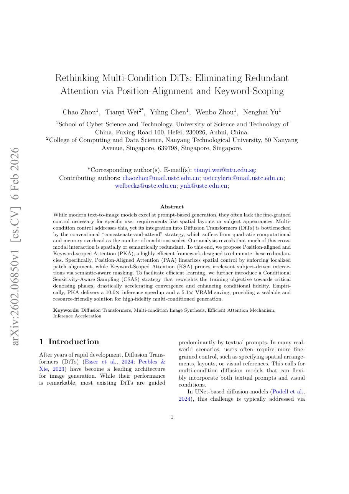

I am a Ph.D. student in Cybersecurity at the University of Science and Technology of China (USTC), advised by Prof. Nenghai Yu. I received my B.Eng. degree from USTC in 2023.
My research focuses on multimodal generation, with an emphasis on controllable and efficient image/video generation, instruction following, and reinforcement learning for generative models. I am interested in making foundation models more capable, resource-efficient, and trustworthy.
Previously, I was a Research Intern at Microsoft Research Asia, where I worked on copyright protection and authorization for text-to-image models. I welcome discussions and collaborations in generative AI.
News
Feb 2026
NEWOur work on efficient multi-condition DiTs is available on arXiv.
2025
Scale Your Instructions was accepted to ICCV 2025.
2025
Our work on plug-in authorization for text-to-image models was published in TMLR.
Experience
Ph.D. Student · Cybersecurity
University of Science and Technology of China
2023 – Present
Research Intern
Microsoft Research Asia, Beijing
2022 – 2023
B.Eng. · Cybersecurity
University of Science and Technology of China
2019 – 2023
Selected Publications

Rethinking Multi-Condition DiTs: Eliminating Redundant Attention via Position-Alignment and Keyword-Scoping
Position-aligned and Keyword-scoped Attention removes redundant spatial and semantic interactions, achieving 10.0× inference speedup and 5.1× VRAM saving in the reported experiments.
Scale Your Instructions: Enhance the Instruction-Following Fidelity of Unified Image Generation Model by Self-Adaptive Attention Scaling
Chao Zhou, Tianyi Wei, Nenghai Yu
IEEE/CVF International Conference on Computer Vision (ICCV), 2025
SaaS dynamically identifies and strengthens neglected sub-instructions, improving complex instruction following without additional training or test-time optimization.